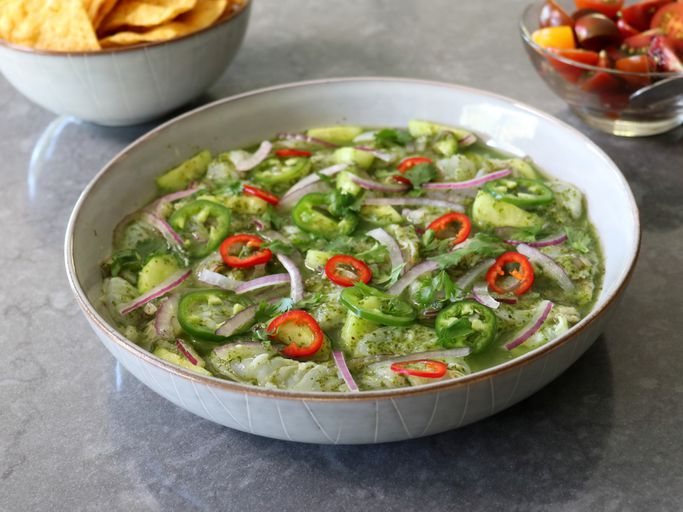

Garlic Shrimp Aguachile
Return Home

Description
If you like sushi, sashimi, ceviche, or fish crudo, or even if you just like beautiful, delicious, easy things to make, this garlic shrimp aguachile is for you. Aguachile, or “chile water,” uses lime juice to “cook” the shrimp, or, if served immediately, to just make the shrimp taste fabulous. And you are going to serve it on tortilla chips, so if you weren't tempted already, now you certainly are.
Ingredients
For Aguachile
- 1/2 cup packed cilantro leaves
- 3 cloves garlic, sliced
- 1/2 serrano chile pepper, sliced, or to taste
- 1/3 cup fresh lime juice, from 2 to 3 limes
- 1/3 cup water
- 1/2 teaspoon kosher salt
- 1/4 teaspoon ground black pepper
- 1/4 teaspoon white sugar
For Shrimp
- 1/2 pound raw shrimp - peeled, meticulously deveined, and sliced in half horizontally if large
- 1/3 cup thinly sliced red onion
- 1 cup thinly sliced peeled cucumber
- 1 jalapeno, thinly sliced
- 2 tablespoons cilantro leaves, or as needed
- tortilla chips, for serving
Steps
- Combine cilantro, garlic, serrano chile, lime juice, water, salt, pepper, and sugar in a tall cup or the jar of a blender; blend with a stick blender or regular blender until smooth. Refrigerate aguachile while other ingredients are prepared.
- Add shrimp, cucumber, and red onion to a bowl, and pour in aguachile. Stir well, and press shrimp down into aguachile to cover. Wrap and refrigerate for 30 minutes to 1 hour before serving.
- Sprinkle aguachile with jalapeno slices and cilantro to garnish, and serve with tortilla chips.
Return Home